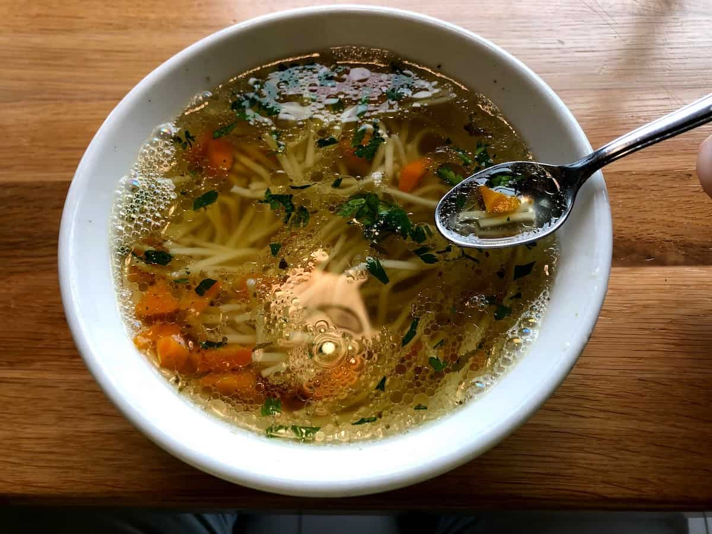

Polish Rosół

Ingredients
- A whole chicken
- 2 carrots
- roughly 4 parsley leaves
- 1 leek
- 1 whole onion
- whole peppercorn
- celeriac
- water
Instructions
- Step 1: Prepare the chicken by cutting it up into individual pieces, we will use each part except for the breast. After cutting it you will need to clean it with water to get rid of any blood.
- Step 2: Add the various herbs and spices listed to the pot. After adding the herbs and spices drop the chicken meat on top.
- Step 3: Now we will prepare the vegtables. Peel each vegtebale listed and cut in half apart from the leek. As for the leek, cut off the green part and cut the rest of it in half. Clean all the vegtebales thoroughly and add to the pot.
- Step 4: Add cold water to the pot, it should roughly reach 5cm above the vegetebales.
- Step 5: Bring the water to a gentle boil with medium heat and once it begins boiling, lower the heat. You should let it simmer for roughly 5 hours.
- Step 6: After the time is up, remove any of the foam that has been made. Put the contents of the soup through a strain and pour the broth into another pot/container.
- Step 7: After you have just the broth, add salt to your liking along with ground black pepper.
- Step 8: Serve in a bowl with a noodle of choice and add parsley for even more flavour.
Enjoy your rosół